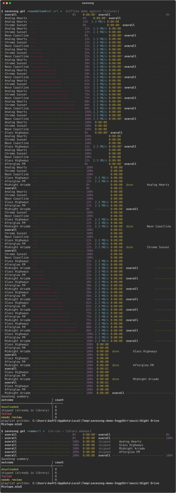
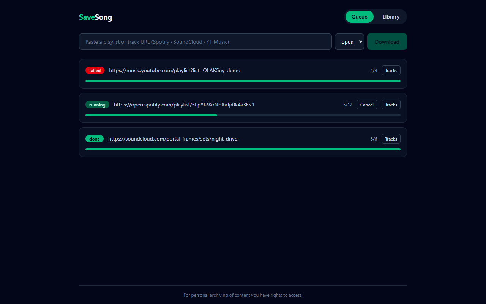
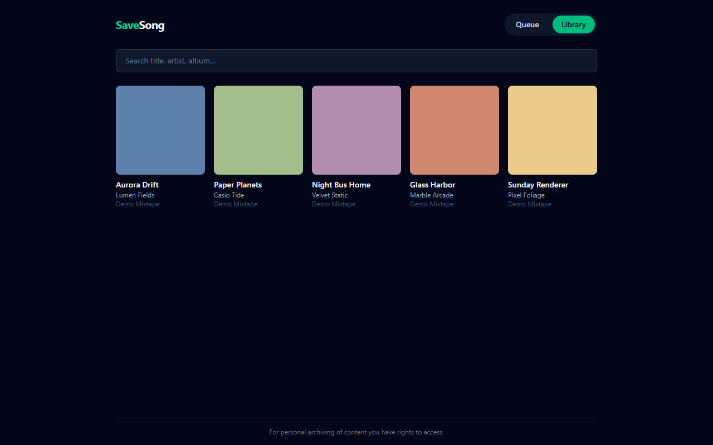

Download playlists from Spotify, SoundCloud, and YouTube Music into a tagged, organized, deduped local library — one typed async engine, two frontends: a Rich CLI and a self-hosted web UI.
Live multi-track progress bars, atomic .part staging (Ctrl-C never leaves partial files), and instant dedupe on re-runs.

Paste a URL, watch per-track progress stream in over SSE, browse your library with cover art. One command: docker compose up.


Senior-grade internals in a fun-sized tool.
Spotify is metadata-only — audio is found on YouTube Music by a documented scoring engine (fuzzy title/artist + duration window + rendition penalties). 50/50 top-1 on a labeled fixture set, gated in CI at ≥0.88. Low-confidence tracks go to an interactive review queue instead of guessing.
Bounded-concurrency downloads under an asyncio.TaskGroup, yt-dlp progress
hooks plumbed to Rich bars and SSE, staging dirs with atomic renames —
zero partial files on Ctrl-C or job abort.
One typed core (savesong.core) with zero logic in the frontends.
SQLite library for dedupe/resume/retry, mutagen tagging with cover art,
.m3u8 export. 91% coverage, mypy --strict,
zero-network test suite on Linux + Windows.